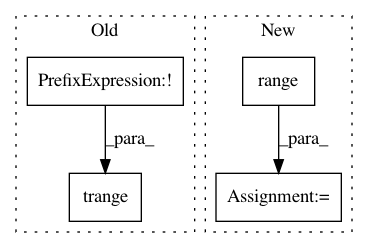

abb1451d02700cfb573ef4093b2c2eaa595ec727,art/attacks/evasion/projected_gradient_descent/projected_gradient_descent_pytorch.py,ProjectedGradientDescentPyTorch,generate,#ProjectedGradientDescentPyTorch#Any#Any#,109
Before Change
adv_x_best = None
rate_best = None
for _ in trange(max(1, self.num_random_init), desc="PGD - Random Initializations", disable=not self.verbose):
adv_x = x.astype(ART_NUMPY_DTYPE)
// Compute perturbation with batching
After Change
batch_eps = self.eps
batch_eps_step = self.eps_step
for rand_init_num in range(max(1, self.num_random_init)):
adversarial_batch = self._generate_batch(x=batch, targets=batch_labels, mask=mask_batch, eps=batch_eps, eps_step=batch_eps_step)
if rand_init_num == 0:
// first iteration: use the adversarial examples as they are the only ones we have now
adv_x[batch_index_1:batch_index_2] = np.copy(adversarial_batch)
else:
// return the successful adversarial examples
attack_success = compute_success_array(
self.estimator,
batch,
batch_labels,
adversarial_batch,
self.targeted,
batch_size=self.batch_size,
)
adv_x[batch_index_1:batch_index_2][attack_success] = adversarial_batch[attack_success]
logger.info(
"Success rate of attack: %.2f%%",
100 * compute_success(self.estimator, x, y, adv_x, self.targeted, batch_size=self.batch_size),
)
In pattern: SUPERPATTERN
Frequency: 3
Non-data size: 4
Instances
Project Name: IBM/adversarial-robustness-toolbox
Commit Name: abb1451d02700cfb573ef4093b2c2eaa595ec727
Time: 2020-11-27
Author: giulio@li-87b782cc-261a-11b2-a85c-fc0eec425ab4.ibm.com
File Name: art/attacks/evasion/projected_gradient_descent/projected_gradient_descent_pytorch.py
Class Name: ProjectedGradientDescentPyTorch
Method Name: generate
Project Name: pymc-devs/pymc3
Commit Name: 1c30a6f487afaeef73464a98320e35961b11873f
Time: 2019-12-09
Author: aloctavodia@gmail.com
File Name: pymc3/variational/inference.py
Class Name: Inference
Method Name: fit
Project Name: IBM/adversarial-robustness-toolbox
Commit Name: abb1451d02700cfb573ef4093b2c2eaa595ec727
Time: 2020-11-27
Author: giulio@li-87b782cc-261a-11b2-a85c-fc0eec425ab4.ibm.com
File Name: art/attacks/evasion/projected_gradient_descent/projected_gradient_descent_tensorflow_v2.py
Class Name: ProjectedGradientDescentTensorFlowV2
Method Name: generate